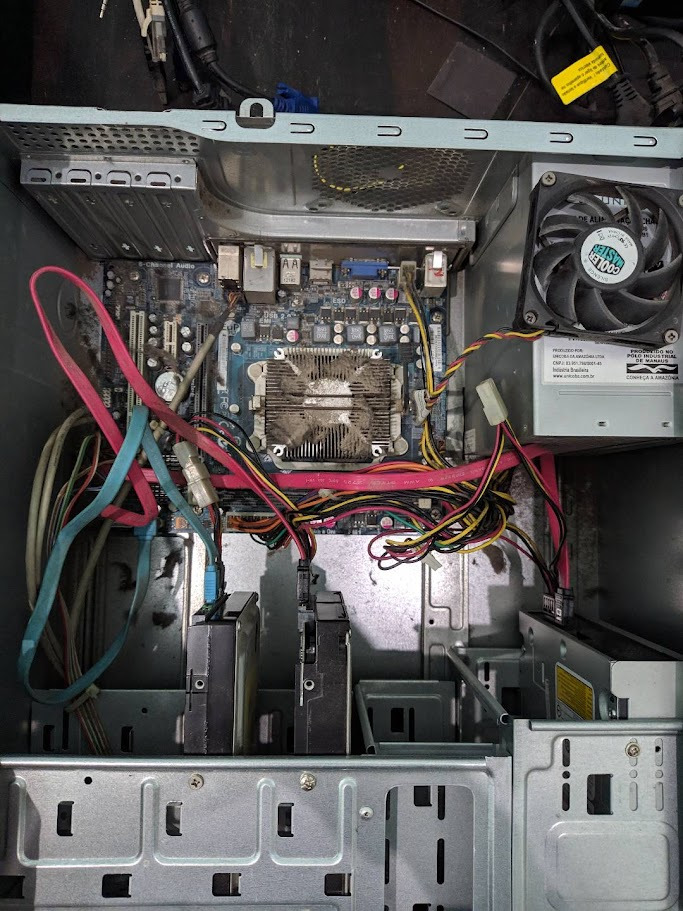

Infor e Tecnologia segue os mais rígidos padrões de qualidade para a manutenção em computadores das mais diversas marcas, propiciando aos clientes a garantia total dos serviços executados.
Exemplo numero 1: fotografia de uma manutenção periodica:
Muitos problemas ocasionados é pela falta periódica de manutenção dos computadores, cujo custo, muitas vezes, acaba sendo muito superior a uma contratação mensal, isso sem contar os possíveis transtornos que possam ocorrer devido a gravidade do problema.
Somente um especialista em informática pode fazer a manutenção correta de umcomputador, prevendo possíveis problemas, evitando transtornos e garantindo a segurança dos dados armazenados no equipamento.
Cotando com um pessoal altamente qualificado, a Infor e Tecnologia, presta serviços de manutenção avulsa e contratual como:
- Gestão Corporativa em TI: prestamos manutenção em computadores empresariais.
- Manutenção preventiva, corretiva e de segurança para seu computador.
- Manutenção em computadores, Formatação em Notebooks, Netbooks.
- Manutenção de hardware, software, e redes físicas ou wireless (sem fio).
- Manutenção e atualização de sistemas operacionais (Família Windows).
- Instalação e configuração de Impressoras.
Exemplo numero 2: fotografia de uma manutenção periodica:

Vendas de peças, acessórios e computadores completos.
A INFOR E TECNOLOGIA também vende todo tipo de peças e acessórios para seu
computador, montamos e fazemos upgrades de acordo com sua necessidade e bolso.